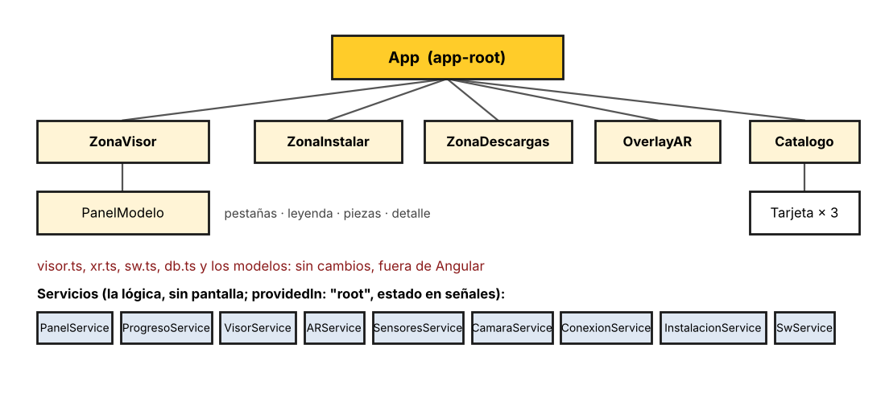

En React hizo falta addEventListener en un efecto. Angular enlaza cualquier evento del DOM con (nombre).
Portada
Electiva · PWA — Sub-bloque B · Proyecto Módulo AR · Sesión 18 de 19
Angular y PWA
El mismo Atlas 3D, reconstruido con Angular: componentes, servicios y señales. Qué cambia respecto a React, qué no se toca y qué dicen las cifras, incluida la versión que sale peor.
AsignaturaElectiva - PWA
Sesión18 de 19 · Proyecto Módulo AR
InstituciónUPTC
SESIÓN 18
Otro framework, la misma regla
Angular organiza la pantalla con plantillas, servicios y señales. Three.js, WebXR y el Service Worker siguen siendo lo que eran.
Servicios y señalesLa fronteraTres versiones
Antes de empezar
Objetivos de aprendizaje
- Reconocer cómo organiza Angular una app (componentes, servicios, inyección, señales) y qué no es suyo.
- Preparar el proyecto y los ajustes que exige un código que no se escribió para él.
- Repartir la lógica en servicios con señales y la pantalla en componentes, comparando con React.
- Cuidar la frontera:
DestroyRef,afterNextRendery carga diferida conimport(). - Mantener el Service Worker propio fuera de Vite.
- Comparar tres versiones con cifras reales y aceptar que ninguna gana en todo.
.zip
Recursos: pwa-ar-objetos3d-sesion43.zip
CHECKPOINT · CIERRE DE LA SESIÓN 43 · PUNTO DE PARTIDA
El Atlas en React.
.zip
Recursos: pwa-ar-objetos3d-sesion44.zip
VERSIÓN TERMINADA · + INFORMES HTML S42, S43 Y S44
Angular · 1.1
Las mismas ideas, otra forma de decirlas
| Idea | React (S43) | Angular (S44) |
|---|---|---|
| La pantalla | Función que devuelve JSX | Clase + plantilla HTML (.ts y .html) |
| El estado | useState en hooks | Señales (signal, computed) en servicios |
| Compartir lógica | Un hook llamado en cada componente | Un servicio creado una vez y pedido con inject() |
| Efectos y limpieza | useEffect y su retorno | effect + onCleanup, afterNextRender, DestroyRef |
| Formularios | Campo controlado | [(ngModel)] con una señal |
| Detectar cambios | Vuelve a ejecutar el componente | Sin zone.js: se redibuja lo que lee una señal |
Angular · 1.2
La estructura del Atlas en Angular

Componentes arriba (dibujan); servicios abajo (lógica y estado); en rojo, lo que está fuera de Angular y es idéntico al de la S42.
Angular · 1.3
Quién guarda qué
| Servicio | Qué guarda o hace | En React (S43) |
|---|---|---|
PanelService | Modelo y pieza elegidos; ficha | usePanel |
ProgresoService | Visitas, favoritos y notas | useProgreso |
VisorService | Crea y destruye el visor 3D | Un efecto en App.tsx |
ARService · SensoresService · CamaraService | AR, sensores, cámara de fondo | useAR, useSensores, useCamara |
ConexionService · InstalacionService | Banda sin conexión; instalación | useConexion, useInstalacion |
SwService | Registro del SW; «listo sin conexión» | useRegisterSW |
Proyecto · 2.1
Cuatro ajustes de configuración
!
Node 22.22.3 o superior
Angular 22 se niega a ejecutarse con menos. El primer intento, con 22.22.0, terminó con ese error. Por eso cambia también el flujo de GitHub Pages.
1
Una opción del compilador
noPropertyAccessFromIndexSignature prohíbe userData.piezaId. Se desactivó, con comentario, en vez de reescribir un motor probado.
2
La carpeta de salida
outputPath = { base: "dist", browser: "" }: los archivos quedan en dist/, no en dist/browser/.
Y el cuarto:
import.meta.env.BASE_URL es de Vite; Angular no lo define. Se resuelve con un archivo nuevo, base.ts.Proyecto · 2.2
El punto de entrada: de 649 líneas a 13
src/main.ts
bootstrapApplication(App, appConfig)
.then((app) => {
// Solo en desarrollo: un asa para que las pruebas puedan destruir la aplicación y comprobar la limpieza.
if (isDevMode()) (window as unknown as { __atlas: { destruir: () => void } }).__atlas = { destruir: () => app.destroy() };
})
.catch((err) => console.error(err));index.html solo trae <app-root>. El asa __atlas existe solo en desarrollo: la usa la prueba de la limpieza.Proyecto · 2.3
Una variable, dos entornos
src/base.ts
const g = globalThis as unknown as { document?: { baseURI: string }; registration?: { scope: string } };
export const BASE_URL = new URL(g.document?.baseURI ?? g.registration!.scope).pathname;En la página:
document.baseURI (la etiqueta <base href>). En el Service Worker, que no tiene document: el alcance con que se registró. avisos.ts, descargas.ts y sw.ts cambiaron una línea cada uno.Proyecto · 2.4
La compilación, tal cual
Terminal
$ npm run build
✔ Building...
Initial chunk files | Names | Raw size | Estimated transfer size
main-2QDUYDRM.js | main | 222.02 kB | 62.66 kB
styles-NF7OE3ID.css | styles | 6.44 kB | 1.53 kB
chunk-GD7SK6UO.js | - | 3.56 kB | 1.50 kB
| Initial total | 232.01 kB | 65.69 kB
Lazy chunk files | Names | Raw size | Estimated transfer size
chunk-XFRBEUET.js | visor | 528.26 kB | 110.71 kB
PWA · Service Worker propio
precache 9 entries (753.84 KiB)
dist/sw.jsUn archivo inicial (main: app + Angular) y uno diferido (visor: Three.js + visor.ts). Precaché: 9 entradas, 753,84 KiB (React: 10 y 778,17; sin framework: 9 y 558,82).
Servicios · 3.1
Señales en un servicio, y lo derivado con computed
panel.service.ts
readonly modeloId = signal(CATALOGO[0].id);
readonly piezaId = signal<string | null>(null);
private readonly fichaCargada = signal<{ id: string; datos: Ficha | null } | null>(null);
readonly def = computed(() => modeloPorId(this.modeloId())!);
readonly pieza = computed(() => this.def().piezas.find((p) => p.id === this.piezaId()));
readonly ficha = computed(() => {
const f = this.fichaCargada();
return f?.id === this.modeloId() ? f.datos : null;
});Cuando cambia
modeloId, la definición, la pieza y la ficha se recalculan solas.Servicios · 3.2
Un manejador habla con el visor y con el estado
panel.service.ts
// Un manejador de eventos habla con el visor (imperativo) y actualiza el estado (declarativo).
elegirModelo(id: string): void {
const def = modeloPorId(id);
const visor = this.visorSvc.visor();
if (!def || !visor) return;
visor.mostrarModelo(def);
this.modeloId.set(id);
this.piezaId.set(null);
}Imperativo («muestra este modelo») y declarativo («el modelo elegido es este») en la misma función: el mismo patrón que
usePanel.Servicios · 3.3
Descartar la respuesta vieja
panel.service.ts
effect((alLimpiar) => {
const id = this.modeloId();
let vigente = true; // si cambias de modelo antes de que llegue, la respuesta vieja se descarta
alLimpiar(() => (vigente = false));
void leerFicha(id).then((datos) => {
if (vigente) this.fichaCargada.set({ id, datos });
});
});En React era la bandera
cancelado de un useEffect. En Angular, effect recibe onCleanup.Servicios · 3.4
El componente es el elemento que ya existía
zona-visor.ts
@Component({
selector: "section[zonaVisor]",
imports: [PanelModelo],
templateUrl: "./zona-visor.html",
host: { class: "visor-zona" },
})
export class ZonaVisor {
protected readonly visorSvc = inject(VisorService);
protected readonly sensores = inject(SensoresService);
protected readonly camara = inject(CamaraService);
protected readonly ar = inject(ARService);
private readonly contenedor = viewChild.required<ElementRef<HTMLDivElement>>("contenedor");
private readonly video = viewChild.required<ElementRef<HTMLVideoElement>>("video");
constructor() {
// El <div id="visor"> existe recién después del primer dibujo: entonces se crea el visor.
afterNextRender(() => {
this.camara.registrarVideo(this.video().nativeElement);
this.visorSvc.montar(this.contenedor().nativeElement);
});
}section[zonaVisor]: mismos elementos, ids y clases que antes. Las pruebas, que buscan por id, no se enteran del cambio.Frontera · 4.1
Crear, destruir y diferir
visor.service.ts
@Injectable({ providedIn: "root" })
export class VisorService {
readonly visor = signal<Visor | null>(null);
/** Mensaje de aviso bajo la barra de botones (cámara, sensores, AR). */
readonly aviso = signal("");
private destruido = false;
constructor() {
// La limpieza: sin ella, el canvas, los oyentes y los recursos de la GPU quedarían vivos.
inject(DestroyRef).onDestroy(() => {
this.destruido = true;
this.visor()?.destruir();
});
}
async montar(contenedor: HTMLElement): Promise<void> {
// import() dinámico: el compilador de Angular saca visor.ts y Three.js del archivo principal y los deja
// en un archivo aparte que se descarga DESPUÉS de dibujar la página (Sesión 42: el mismo remedio, otra técnica).
const { crearVisor } = await import("../../visor");
if (this.destruido) return; // la aplicación se destruyó mientras se descargaba el archivo
this.visor.set(crearVisor(contenedor));
}
}destruir(): la limpieza. await import(): carga diferida. if (this.destruido): la app pudo destruirse mientras se descargaba.Frontera · 4.2
Angular no tiene StrictMode: hubo que construir la prueba
1
Un asa solo en desarrollo
window.__atlas.destruir() destruye la aplicación (definida en main.ts con isDevMode()).
2
Se cuenta el dibujo
Después de destruir, cuántas veces algo pide requestAnimationFrame. Debe ser 0.
3
Y que no hay zone.js
La prueba C1 comprueba que la app es de verdad zoneless, no solo que lo dice la configuración.
Frontera · 4.3
La prueba, y la prueba de la prueba
Terminal
$ node test_s44.js
A1) desarrollo → lienzos en el visor: 1
A2) cambiar de modelo en desarrollo → piezas: 5 | errores de página: []
A3) con la app viva el bucle de dibujo sigue pidiendo cuadros → llamadas en 0,5 s: 30
A4) tras destruir la aplicación → llamadas de requestAnimationFrame en 0,7 s: 0 | errores de página: []
B1) escribir una nota y marcar favorito otra tarjeta → nota conservada: "repasar el controlador" | botón: ★ Favorito
C1) zone.js en la página → undefined
RESULTADO: todo en orden
$ sed -i 's|^ this.visor()?.destruir();| // this.visor()?.destruir();|' src/app/servicios/visor.service.ts (se comenta la limpieza del visor)
$ node test_s44.js
A1) desarrollo → lienzos en el visor: 1
A2) cambiar de modelo en desarrollo → piezas: 5 | errores de página: []
A3) con la app viva el bucle de dibujo sigue pidiendo cuadros → llamadas en 0,5 s: 30
A4) tras destruir la aplicación → llamadas de requestAnimationFrame en 0,7 s: 42 | errores de página: []
✗ FALLÓ: tras destruir la aplicación el bucle de dibujo debe detenerse (la limpieza del visor)
B1) escribir una nota y marcar favorito otra tarjeta → nota conservada: "repasar el controlador" | botón: ★ Favorito
C1) zone.js en la página → undefined
RESULTADO: hay 1 fallosSin
destruir(): 42 llamadas a requestAnimationFrame en lugar de 0, y la prueba falla. La línea se restauró y volvió a pasar.Estado externo · 5.1
Una señal basta: sin useSyncExternalStore
instalacion.service.ts
constructor() {
const dejarDeEscuchar = iniciarInstalacion(() => {
this.estado.set(estadoInstalacion());
this.rechazada.set(instalacionRechazada());
});
inject(DestroyRef).onDestroy(dejarDeEscuchar);
}instalar.ts avisa; el servicio vuelve a leer y actualiza la señal. DestroyRef deja de escuchar.Estado externo · 5.2
La carrera de la S43, cerrada
app.ts
constructor() {
// Pedir el servicio aquí lo crea ahora, ANTES del primer dibujo: el oyente de beforeinstallprompt
// ya está puesto cuando la página aparece. (En React se ponía en un efecto, después del primer dibujo.)
inject(InstalacionService);
const sw = inject(SwService);
afterNextRender(() => sw.iniciar());
// appinstalled se dispara cuando el usuario instala la PWA.
const alInstalar = () => void mostrarAviso("Atlas 3D instalado", "Ya puedes abrirlo desde tu pantalla de inicio.", BASE_URL, "atlas-instalado");
window.addEventListener("appinstalled", alInstalar);
inject(DestroyRef).onDestroy(() => window.removeEventListener("appinstalled", alInstalar));
}El servicio se crea cuando alguien lo pide;
App lo pide en su constructor, antes de que nada se dibuje. En React el oyente esperaba un efecto.Estado externo · 5.3
Por qué se conserva el Service Worker propio
ngsw
Lo que ofrece Angular
Su propio SW (provideServiceWorker, ng add @angular/pwa): precaché y caché de peticiones, con un JSON.
sw.ts
Lo que ya hace el Atlas
Descarga voluntaria de fichas, sincronización en segundo plano y avisos con ?modelo=ID (S26, S37, S40).
→
La decisión
Se conserva sw.ts. Cambia quién lo compila (build.mjs) y quién lo registra (SwService).
Estado externo · 5.4
El precaché, inyectado: lo que hacía vite-plugin-pwa
scripts/build-sw.mjs
const { count, size, warnings } = await injectManifest({
swSrc: temporal,
swDest: "dist/sw.js",
globDirectory: "dist",
globPatterns: ["**/*.{html,js,css,png,json}"],
// Las fichas de modelos NO se precachean: se descargan bajo demanda (la descarga «voluntaria» de la Sesión 37).
// Tampoco el propio Service Worker ni su archivo temporal.
globIgnores: ["modelos/**", "sw.js", ".sw-empaquetado.js"],
});esbuild empaqueta sw.ts con Workbox; workbox-build escribe la lista de archivos en self.__WB_MANIFEST. build.mjs encadena ng build → tipos del SW → empaquetado.Estado externo · 5.5
Registrar con workbox-window
sw.service.ts
const wb = new Workbox(`${BASE_URL}sw.js`, { scope: BASE_URL });
// Primera instalación: el precaché quedó completo.
wb.addEventListener("activated", (e) => {
if (e.isUpdate) return;
this.offlineReady.set(true);
// El usuario está mirando la pantalla: la notificación solo si NO la está mirando.
if (document.visibilityState !== "visible") {
void mostrarAviso("Atlas 3D listo", "Ya funciona sin conexión.", BASE_URL, "atlas-offline");
}
});
// Versión nueva (autoUpdate): cuando toma el control, se recarga para usarla.
wb.addEventListener("controlling", (e) => {
if (e.isUpdate) window.location.reload();
});
wb.register().catch((error) => console.error("Error al registrar el SW de Workbox:", error));Cambia para ti:
npm run dev ya no tiene Service Worker. Para probar sin conexión: npm run build + npm run preview.Dos casos · 6.1
Un evento poco común: (beforexrselect)
overlay-ar.html
<button type="button" id="btn-pieza-ant" aria-label="Pieza anterior" (click)="panel.recorrerPiezas(-1)" (beforexrselect)="$event.preventDefault()">◀</button>
<p id="xr-pieza" class="xr-pieza">{{ textoPieza() }}</p>
<button type="button" id="btn-pieza-sig" aria-label="Pieza siguiente" (click)="panel.recorrerPiezas(1)" (beforexrselect)="$event.preventDefault()">▶</button>Dos casos · 6.2
El defecto de la S42 sigue resuelto
tarjeta.html
<div class="nota-zona">
<input type="text" class="nota-input" placeholder="Nota de estudio..." [(ngModel)]="nota" />
<button class="btn-guardar-nota" [attr.data-id]="modelo().id" (click)="guardar()">🔒 Guardar nota</button>
<button class="btn-ver-nota" [attr.data-id]="modelo().id" [disabled]="!progreso()?.notaCifrada" (click)="progresoSvc.verNota(modelo().id)">👁 Ver nota</button>
</div>Cada tarjeta guarda su señal
nota. Marcar un favorito en otra no la toca: la prueba B1 lo confirma (nota conservada).Pruebas · 7.1
La primera compilación, rechazada por la prueba de la S42
Terminal
$ S42DIR=s44 node test_s42.js (un solo archivo)
4) service worker → {"activo":true,"controla":true,"precache":7}
✗ FALLÓ: precaché completoLa prueba exige 8 archivos en el precaché; había 7. Indicador indirecto de «Three.js separado»: la S42 lo había separado, y la primera versión de Angular lo deshizo sin que nadie lo notara. El remedio:
import() dinámico.Pruebas · 7.2
La misma prueba, sin cambiarla, con el visor diferido
Terminal
$ S42DIR=s44 node test_s42.js
1) documento → {"lang":"es","viewport":"width=device-width, initial-scale=1.0","descr":140,"tema":"#0b1220","main":1,"h1":1,"contextoSeguro":true,"titulo":"Atlas 3D de Arquitectura de Software"}
2) manifest → errores de Chrome: [] | name: Atlas 3D de Arquitectura de Software | display: standalone | start_url: ./ | iconos: ["192x192","512x512","512x512/maskable"]
3) Chrome dice: errores de instalabilidad → []
4) service worker → {"activo":true,"controla":true,"precache":9}
5) servidor caído y recarga → {"canvas":1,"pestanas":3}
6) desplazamiento de diseño acumulado (CLS) al cargar → 0.008
7) escena quieta durante 1,5 s → llamadas de dibujo: 0
8) arrastrar para girar → llamadas de dibujo nuevas: sí (744)
9) tras soltar y pasar la inercia → vuelve a quedarse quieta: sí
10) elegir una pieza → llamadas de dibujo nuevas: sí
11) cambiar de modelo → llamadas de dibujo nuevas: sí
12) cambiar el tamaño de la ventana → llamadas de dibujo nuevas: sí
pageerrors: []
RESULTADO: todo en ordenPruebas · 7.3
Regresión: S41, S40 y subruta
Terminal
$ S41DIR=s44 node test_s41.js | tail -6
G2) se corta la red → banda: Sin conexión: los modelos y las fichas descargadas siguen disponibles.
G3) sin red se cambia de modelo → «Niveles apilados: cada capa solo habla con la inme…»
G4) vuelve la red → banda: Volvió la conexión.
G5) 3,3 s después → banda: null
pageerrors: []
RESULTADO: todo en orden
$ S40DIR=s44 node test_s40.js | tail -5
J2) dentro de AR → rastro: activa | diagnóstico: Última sesión de AR: sin registro.
J3) tras salir → rastro: fin-ok
J4) diagnóstico → Última sesión de AR: terminó completa (hace 1 s).
J5) rastro interrumpido simulado, tras recargar → Última sesión de AR: se interrumpió en el paso «fin-3-ancla» (hace 4 s). | panel abierto: true
pageerrors: []
$ node test_subruta.js
ficha → ["http://localhost:4195/atlas-3d/modelos/mvc.json",200]
descarga desde el botón → caché modelos-3d: ["http://localhost:4195/atlas-3d/modelos/capas.json","http://localhost:4195/atlas-3d/modelos/microservicios.json","http://localhost:4195/atlas-3d/modelos/mvc.json"]
peticiones fuera de la subruta o 404: [] | pageerrors: []Pruebas · 7.4
La misma pantalla, tres versiones

Sin framework · React · Angular. Migrar no debe cambiar lo que ve el usuario, y aquí no cambió.
Comparación · 8.1
Tres versiones, medidas igual (mediana de 5)
| Medida | Sin framework | React | Angular, un archivo | Angular, visor diferido |
|---|---|---|---|---|
| Rendimiento | 86 | 94 | 75 | 79 |
| FCP | 1704 ms | 2234 ms | 1810 ms | 1722 ms |
| LCP | 2256 ms | 2371 ms | 2342 ms | 2773 ms |
| TBT | 455 ms | 132 ms | 995 ms | 620 ms |
| CLS | 0,05 | 0 | 0 | 0 |
| Precaché | 9 · 558,82 KiB | 10 · 778,17 KiB | 7 entradas | 9 · 753,84 KiB |
| Líneas de la interfaz | 722 | 978 | 1020 | |
Las tres se midieron intercaladas, en la misma sesión: solo son comparables las cifras de una misma tanda (por eso difieren de las de la S43).
Comparación · 8.2
Las cinco corridas de cada versión

Angular con visor diferido va de 73 a 86 en rendimiento; el de un solo archivo, de 74 a 75. Una sola medición no decide nada.
Comparación · 8.3
Cómo leer estas cifras
- React: mejor puntaje, peor primer contenido (HTML vacío hasta que corre el JavaScript). TBT bajísimo.
- Angular en un solo archivo es la peor: Three.js y Angular se ejecutan juntos en una tarea larga de unos 970 ms que bloquea el hilo.
- Diferir el visor (una línea,
import()): rendimiento 75 → 79, TBT 995 → 620 ms, y el mejor FCP de las dos con framework. - Pero el LCP empeora (2342 → 2773 ms): el visor llega más tarde. Explicación plausible, no aislada.
- La dispersión es grande: 79 contra 75 es pequeño frente al ruido; el TBT es la diferencia más firme.
- La forma de cargar importa tanto como el framework.
Teléfono · 9.1
Esta vez el repositorio no se actualiza «encima»
- Node:
node -vdebe mostrar 22.22.3 o superior. - Vacía tu carpeta, salvo
.git(tambiénnode_modulesypackage-lock.json), y copia el contenido depwa-ar-objetos3d-sesion44.zip. - Reemplaza
pages.ymlpor el del zip (Node 22 y--base-href). Con el viejo, la publicación falla. npm install;npm run dev(sin Service Worker) ynpm run build+npm run preview.git add .,git commit,git push; espera la marca verde en Actions.- En tu teléfono, recarga dos veces: gira y se queda quieto; piezas; «Ver en AR»; sensores; «Instalar»; con modo avión, abre.
- Mide con Lighthouse (incógnito, «Móvil»): tres corridas de la S43 y tres de hoy.
Actividades
Actividad 1: Mide las tres versiones
1
Mide las tres versiones
INDIVIDUAL · 60 MIN
Sirve las versiones de las Sesiones 42, 43 y 44. Corre Lighthouse tres veces en cada una (incógnito, móvil) y arma la tabla de medianas: rendimiento, FCP, LCP y TBT. Compárala con la de la guía.
Entregable: tu tabla y un párrafo con lo que coincide y lo que no.
Actividades
Actividad 2: Rompe la limpieza del visor
2
Rompe la limpieza del visor
EN PAREJAS · 45 MIN
Comenten this.visor()?.destruir(); en visor.service.ts y ejecuten npm run dev. Con la página abierta, en la consola: cuenten los requestAnimationFrame tras __atlas.destruir() (el fragmento está en la guía). Restauren y repitan.
Para pensar: en React, StrictMode delataba el defecto solo. ¿Por qué en Angular hizo falta construir una prueba?
Entregable: el número con y sin la línea (en el proyecto: 42 y 0) y la respuesta.
Actividades
Actividad 3: Un servicio nuevo: el contador de visitas
3
Un servicio nuevo: el contador de visitas
INDIVIDUAL · 90 MIN
Añade a cada Tarjeta «Visitado N veces». Antes decide: ¿el contador es una señal de la tarjeta o ya existe en ProgresoService? Implementa lo más simple y explica por qué.
Entregable: el código y una frase que justifique dónde vive el dato.
Actividades
Actividad 4: Cuesta lo mismo, ¿pesa lo mismo?
4
Cuesta lo mismo, ¿pesa lo mismo?
INDIVIDUAL · 60 MIN
Quita el import() dinámico de visor.service.ts (vuelve al import estático) y compila. Mira cuántas entradas tiene el precaché y ejecuta S42DIR=s44 node test_s42.js.
Para pensar: ¿qué otra forma habría de dejar el visor y Three.js en un archivo aparte sin import()?
Entregable: el número de entradas, el resultado de la prueba y tu respuesta.
Cierre
Resumen de la sesión
- Angular: componentes con plantilla, servicios con
inject(), estado en señales, sin zone.js. Lo que es motor se queda fuera. - Cuatro ajustes: Node 22.22.3, una opción del compilador, la carpeta de salida y
base.ts. - Frontera:
afterNextRenderpara crear,DestroyRefpara deshacer, y una prueba construida porque Angular no tiene StrictMode. - Se conservó el Service Worker propio;
build.mjsocupa el lugar devite-plugin-pwa. - Las pruebas de la S39 a la S42 pasaron sin cambiar su lógica, y una delató que Three.js había vuelto a un solo archivo.
- Medido: un archivo 75; visor diferido 79 (LCP peor); React 94 con el peor FCP. Nadie gana en todo.
Cierre
Próxima sesión
Sesión 45: comparación y cierre del Sub-bloque B. Las tres versiones del Atlas lado a lado: qué se gana y qué se paga con cada una, y cómo decidir sin quedarse en la moda.
Cierre
Referencias
[1] Angular, "Signals", "Dependency injection" y "Zoneless," angular.dev/guide.
[2] Angular, "afterNextRender" y "DestroyRef," angular.dev/api/core.
[3] Angular, "Application builder" (
@angular/build:application), angular.dev/tools/cli.[4] Angular, "Service workers" (
ngsw y @angular/pwa), angular.dev/ecosystem/service-workers.[5] Workbox, "workbox-window" y "injectManifest," developer.chrome.com/docs/workbox.
[6] web.dev, "FCP", "LCP" y "TBT," web.dev/articles.
[7] W3C, "WebXR DOM Overlays Module" (
beforexrselect), w3.org/TR/webxr-dom-overlays-1.Cierre
Actualiza tu repositorio
Con la carpeta vaciada (salvo .git) y el contenido del zip copiado:
Terminal
node -v
npm install
npm run build
git add .
git commit -m "Atlas 3D en Angular: componentes, servicios y señales"
git push
Clic o → para continuar
01 / 40